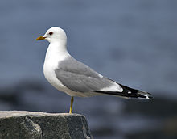
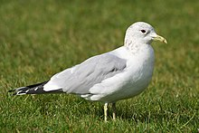
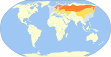

普通海鷗
普通海鷗（學名：Larus canus，英語：common gull，sea mew）是一種中等體型的鷗，口語常俗稱「海鷗」。一般食小魚和其他水生生物，也有吞食其他鳥類的記錄，也曾吞食過兔子。 2022年，為避免因其他俗名產生誤會，「中國鳥類名錄」10.0版將海鷗的中文名修改為普通海鷗。

特徵
普通海鷗腿及無斑環的細嘴綠黃色，白尾，初級飛羽羽尖白色，具大塊的白色翼鏡。冬季頭及頸散見褐色細紋，有時嘴尖有黑色。普通海鷗身姿健美，惹人喜愛，其身體下部的羽毛就像雪一樣晶瑩潔白。 普通海鷗有三個亞種： 指名亞種 Larus canus canus 在歐洲， L.c. heinei 在俄羅斯， 還有最大的堪察加亞種 L. c. kamtschatschensis 在堪察加半島到阿拉斯加。美洲海鷗 （Larus brachyrhynchus） 曾被認為是普通海鷗的亞種，在2021年被美洲賞鳥會分裂為兩個不同的物種。

分布
普通海鷗是候鳥，主要在分布在亞洲、歐洲、澳洲、阿拉斯加及北美洲西部。冬季則會遷徙到南方。 遷徙時見於中國東北各省與日本、台灣、南韓。越冬在整個沿海地區包括海南島；也見於華東及華南地區的大部分內陸湖泊及河流。